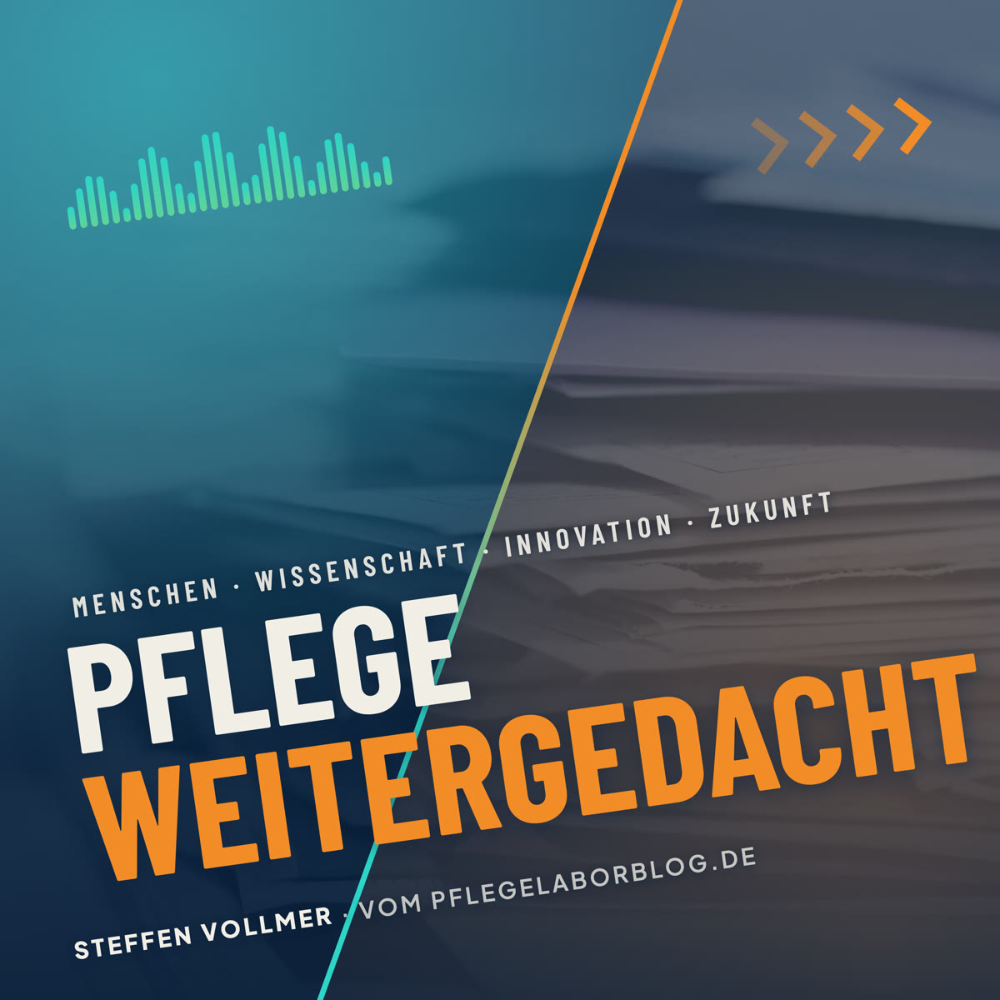

Podcast zur Pflegeausbildung: Pflege weitergedacht
Lesen
Erst lesen.
Zu vielen Folgen gibt es den passenden Beitrag im Blog, mit Quellen, zum Nachlesen und Nachschlagen.
Zum Blog
Hören
Dann hören.
Menschen. Wissenschaft. Innovation. Zukunft.
MACH MIT · MACH MIT · MACH MIT · Du?
Neueste Folge
Jetzt neu
Folge 9 · 12. November 2026 · ca. 19 Minuten
Frühdienst, Spätdienst, Nachtdienst: Warum wir übereinander lästern
Jede Schicht sieht vor allem, was die vorherige hinterlassen hat, und nicht unbedingt, was dort los war. Ich habe selbst im Früh-, Spät- und Nachtdienst gearbeitet, spreche über meine eigenen Vorurteile und frage, wie Pflegeteams besser miteinander statt übereinander sprechen können. Die Beispiele in der Folge sind erfunden und teils bewusst überzeichnet.
Podcast
Alle Folgen
Lesen oder hören
9
Frühdienst, Spätdienst, Nachtdienst: Warum wir übereinander lästern 12. November 2026 · ca. 19 Minuten Podcast
8
Demenz und Essen: Hilft ein roter Teller wirklich? 11. November 2026 · ca. 15 Minuten 7
Insulin einfach erklärt: Typ 1, Typ 2 und was im Notfall zählt 7. November 2026 · ca. 27 Minuten 6
Pflege zwischen Fax und Forschung: Das erwartet dich 3. November 2026 · ca. 8 Minuten Podcast
5
Sturzprophylaxe: Risiken erkennen, sicher begleiten und Freiheit erhalten 4. November 2026 · ca. 26 Minuten 4
Wenn die Fassade bricht 30. Oktober 2026 · ca. 16 Minuten 3
Wie ordne ich meine Ausbildung? 26. Oktober 2026 · ca. 22 Minuten 2
Selbstreflexion in der Pflege: Drei Modelle für den Alltag 18. Oktober 2026 · ca. 25 Minuten 1
Von der Industrie in die Pflege: Mein Weg zur Ausbildung 12. Oktober 2026 · ca. 12 Minuten Podcast
Bewohner, Mitarbeitende, Arbeitgeber und Schule bleiben ungenannt.
Mach mit mir den Podcast.
Ich suche eine Person, die Bock drauf hat, über die Themen zu sprechen. Du musst dich nicht mit der Technik auskennen, das übernehme ich. Freu mich auf Meldungen.
Ich bin dabei
Oder schreib an vollmer.steffen@icloud.com
300 +
Aus zwei Podcasts wird einer.
Pflege weitergedacht und der Podcast zum Pflegelaborblog sind jetzt ein Podcast. Die Ausbildung bleibt ein Thema. Dazu kommt alles, was mit Pflege zu tun hat, und auch Themen, bei denen man nicht einer Meinung sein muss.
Geplant sind über viele Jahre mehr als 300 Folgen. Folge dem Podcast, damit du nichts verpasst. Es ist und bleibt spannend.
×
Folge 9
Frühdienst, Spätdienst, Nachtdienst: Warum wir übereinander lästern
12. November 2026 · ca. 19 Minuten
Jede Schicht sieht vor allem, was die vorherige hinterlassen hat, und nicht unbedingt, was dort los war. Ich habe selbst im Früh-, Spät- und Nachtdienst gearbeitet, spreche über meine eigenen Vorurteile und frage, wie Pflegeteams besser miteinander statt übereinander sprechen können. Die Beispiele in der Folge sind erfunden und teils bewusst überzeichnet.
Unterschiedliche Belastungen in Früh-, Spät- und Nachtdienst. Wie fehlender Einblick in die Arbeit der anderen zu Vorwürfen führt. Warum wir eigene Versäumnisse mit den Umständen erklären, die der anderen aber mit deren Charakter. Wie Zeitdruck und Personalmangel Kolleginnen und Kollegen zum Sündenbock machen können. Ansätze fürs Team: andere Schichten kennenlernen, Aufgaben gemeinsam klären und bei Übergaben begründen, warum etwas offenbleibt. Eigene Erfahrungen und typische Sätze aus dem Schichtalltag kannst du über Mitmachen einreichen.
×
Folge 8
Demenz und Essen: Hilft ein roter Teller wirklich?
11. November 2026 · ca. 15 Minuten
Menschen mit Demenz essen und trinken häufig zu wenig. Können kontrastreiche Teller und gemeinsame Mahlzeiten helfen? Ich ordne die begrenzte Studienlage ein, verbinde sie mit meinen Erfahrungen aus der Pflege und stelle meine eigene Idee „Wir essen gemeinsam, Mahlzeiten als Begegnung“ vor. Ich bin Auszubildender, kein Arzt und kein Wissenschaftler.
Kontrast hilft vermutlich, aber der rote Teller ist kein Wundermittel. Der rote Teller allein reicht nicht. Mitessen hilft beim Erleben, messbar belegt ist es aber nicht. Mein Konzept „Wir essen gemeinsam“: Ruhe, Zeit, Selbstständigkeit und die Frage, welche Unterstützung zum einzelnen Menschen passt. Alle Studien und Quellen findest du ausführlich im Beitrag zum Nachlesen: Demenz und Essen .
×
Folge 7
Insulin einfach erklärt: Typ 1, Typ 2 und was im Notfall zählt
7. November 2026 · ca. 27 Minuten
Die Grundlagen verstehen, statt nur Messen und Spritzen als Ablauf zu lernen: Diese Folge verbindet Ausbildungswissen zu Insulin mit Fragen aus dem Pflegealltag. Ich bin Auszubildender, kein Arzt. Die Folge ersetzt keine ärztliche Beurteilung oder Anordnung, im Notfall gilt die 112.
Bauchspeicheldrüse, Insulin und Glukagon: Wie der Körper den Blutzucker reguliert. Diabetes Typ 1 und Typ 2: Insulinmangel und Insulinresistenz im Vergleich. Basal-, Bolus- und Mischinsuline: Grundbedarf und Bedarf zu den Mahlzeiten. Unter- und Überzuckerung: Warnzeichen und besprochene Notfallsituationen, darunter Ketoazidose und hyperosmolares Koma. Verantwortung bei der Insulingabe: Einwilligung, Hygiene, ärztliche Anordnung und das Abklären von Unsicherheiten. Alle Quellen und Seitenzahlen findest du im Beitrag zum Nachlesen: Insulin einfach erklärt: Typ 1, Typ 2 und was im Notfall zählt .
Außerdem: Die beiden bisherigen Podcasts sind jetzt unter „Pflege weitergedacht“ zusammengeführt. Zum Schluss gibt es einen Aufruf an Menschen, die gelegentlich bei Gesprächen mitmachen möchten.
×

Folge 6
Pflege zwischen Fax und Forschung: Das erwartet dich
3. November 2026 · ca. 8 Minuten
Warum kosten Papier, Fax und Dokumentation im Pflegealltag so viel Zeit? Und wo unterscheiden sich Schulwissen und Praxis? In diesem Trailer stellt Steffen, der selbst eine Pflegeausbildung macht, seine Motivation und die Themen von „Pflege weitergedacht“ vor: Pflegewissenschaft, Digitalisierung und künstliche Intelligenz, Organisation und die Zukunft der Pflege. Verständlich erklärt und mit einer klaren Trennung zwischen persönlicher Erfahrung und wissenschaftlichen Erkenntnissen.
×
Folge 5
Sturzprophylaxe: Risiken erkennen, sicher begleiten und Freiheit erhalten
4. November 2026 · ca. 26 Minuten
Stürze vorbeugen, ohne die Bewegungsfreiheit einzuschränken: Ich spreche als Auszubildender zum Pflegefachmann über Risikofaktoren, individuell angepasste Maßnahmen und den Umgang mit einem Sturz. Grundlage sind der Expertenstandard Sturzprophylaxe des DNQP (Deutsches Netzwerk für Qualitätsentwicklung in der Pflege) und die internationale Weltleitlinie zur Sturzprävention. Dazu kommen meine persönlichen Erfahrungen aus dem Pflegealltag. Ich sage ehrlich, was in den Quellen steht und was meine eigene Einordnung ist.
Wer gefährdet ist: Screening (eine erste, grobe Einschätzung) und vertiefte Einschätzung. Was vorbeugt: Bewegung, Medikamente, Sehen, Füße und Schuhe, Wohnung, Beratung. Keine Fixierung als Sturzprophylaxe: Das Spannungsfeld zwischen Helfen und Selbstbestimmung. Was nach einem Sturz zu tun ist, und wo die Studienlage Grenzen hat. Alle Quellen und Seitenzahlen findest du im Beitrag zum Nachlesen: Sturzprophylaxe: Wie wir Stürzen vorbeugen und was nach einem Sturz zu tun ist . Dazu gibt es das Sturzprophylaxe-Praxispaket zum Ausdrucken.
×
Folge 4
Wenn die Fassade bricht
30. Oktober 2026 · ca. 16 Minuten
Warum Menschen mit Demenz zu Hause glänzen und draußen kaum wiederzuerkennen sind: Ich erzähle von einer Frau mit Demenz, die in ihrer Einrichtung fast selbstständig war und draußen kaum wiederzuerkennen. Dazu gibt es die Kurzfassung, was dabei im Gehirn eine Rolle spielt. Ich sage ehrlich, was meine eigene Einordnung ist und was keine Studie so untersucht hat.
Die „gute Fassade“: Menschen mit Alzheimer wirken im Kurzkontakt oft gesund. Zwei Arten von Gedächtnis und die innere Karte für neue Orte (die bei Alzheimer früh gestört sein kann). Kompensation (das Ausgleichen von Ausfällen), die irgendwann nicht mehr reicht. Vier Überlegungen für die Pflege. Alle Quellen und Seitenzahlen findest du im Beitrag zum Nachlesen: Wenn die Fassade bricht .
×
Folge 3
Wie ordne ich meine Ausbildung?
26. Oktober 2026 · ca. 22 Minuten
Unterlagen wiederfinden und gezielt für Klausuren lernen: In dieser Folge zeige ich, wie ich meinen Schulalltag in der Pflegeausbildung digital organisiere. Ich erzähle, wie meine Ordner nach CE und CTE Einheiten aufgebaut sind (CTE sind die kleinen Pakete innerhalb einer CE) und welche Programme mir dabei helfen. Außerdem geht es darum, wie ich KI nutze und warum das selbstständige Verstehen für mich zuerst kommt.
Ordner nach CE und CTE Einheiten statt nach Lehrern. Unterlagen scannen mit iPhone und MacBook. Obsidian (ein Programm für Notizen) für den Überblick und Zotero (ein Programm zum Sammeln und Verwalten von Literatur) für wissenschaftliche Quellen. KI für Zusammenfassungen und eigene Lernapps, aber erst nach dem eigenen Verstehen. Den passenden Beitrag zum Nachlesen findest du hier: Wie ich meine Ausbildung digital ordne .
×
Folge 2
Selbstreflexion in der Pflege: Drei Modelle für den Alltag
18. Oktober 2026 · ca. 25 Minuten
In dieser Folge geht es um Selbstreflexion (das kritische Nachdenken über das eigene Handeln, Denken und Fühlen) in der Pflege. Ich erzähle, warum sie für meine Ausbildung so wichtig ist, wie ich Reflexion vom Grübeln (kreisendes Nachdenken ohne Ergebnis) unterscheide und wie ich Situationen nachbereite. Dazu stelle ich drei Reflexionsmodelle (feste Schemata, die die Denkschritte vorgeben) für den Alltag vor. Die Beispiele in der Folge sind ausgedacht.
Driscoll: drei Fragen für einen kurzen Rückblick im Alltag. Gibbs: ein Zyklus in mehreren Schritten für belastende Erlebnisse. Johns: eine vertiefte Reflexion, zum Beispiel gemeinsam mit der Praxisanleitung (Fachkraft, die Auszubildende im Einsatz begleitet). Außerdem: fachlich begründetes Handeln, Perspektivwechsel (die Sichtweise des Gegenübers einnehmen), Selbstfürsorge (Fürsorge für die eigene Gesundheit) und die Unterstützung durch andere.
×
Folge 1
Von der Industrie in die Pflege: Mein Weg zur Ausbildung
12. Oktober 2026 · ca. 12 Minuten
Der Wechsel von der Industrie in die Pflege hat mir eine Arbeit gegeben, die mich erfüllt. In dieser ersten Folge stelle ich mich vor: Ich bin Steffen und mache nach mehreren Jahren als Pflegehilfskraft die Ausbildung zum Pflegefachmann. Ich erzähle von meinem beruflichen Weg, meinen ersten Eindrücken aus der Pflegeschule und davon, warum Theorie, Praxis und Reflexion für mein Lernen zusammengehören. Außerdem gebe ich einen Ausblick auf die Themen, die euch im Podcast erwarten, ehrlich und ohne den Pflegealltag schönzureden.
Mein beruflicher Hintergrund: Bundeswehr, Industrie und Servicetechnik, und warum ich schließlich in die Pflege gewechselt bin. Was mir die Arbeit mit Menschen bedeutet und warum ich mich für die Ausbildung zum Pflegefachmann entschieden habe. Erste Eindrücke aus der Pflegeschule und die Unterschiede zu meinen früheren Schulerfahrungen. Mein Blick auf das Lernen: Eigeninitiative, Theorie in der Praxis anwenden, aus Fehlern lernen und reflektieren.
Hier entstehen die Folgen: meine Podcast Ecke mit Mikrofon, Laptop und Sessel.